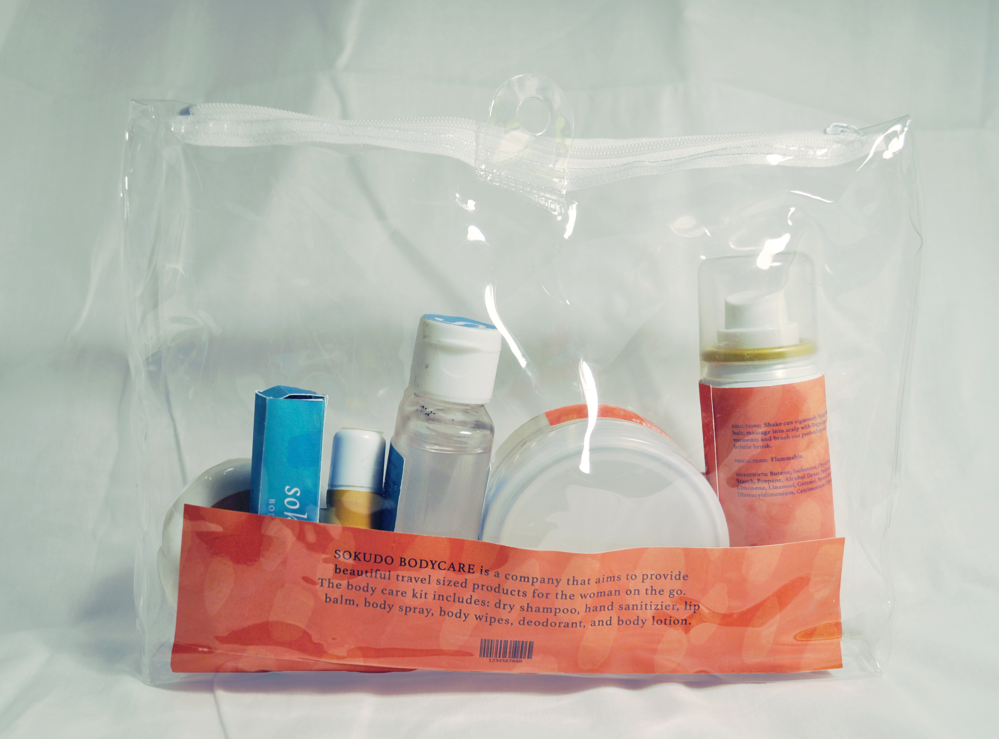
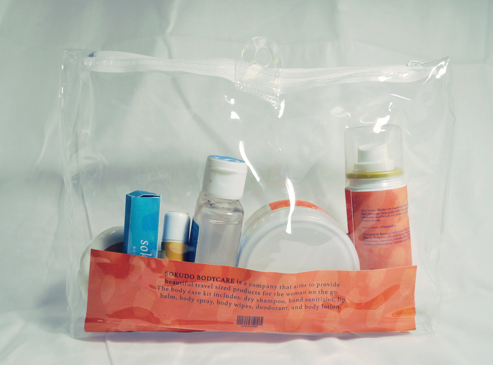

Sokudo Bodycare is a self care line that is aimed towards the woman on the go.
The products in this line are travel sized, meant to be carried for vacations, overnight stays, and to freshen up after a gym session.
The project included a line of seven items as well as a social media channel.

 
